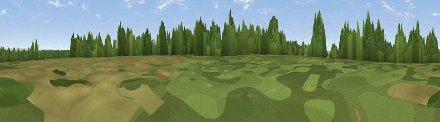

Viewpoint near Huntington
#34869 in England · top 50% of its area beats it · near HuntingtonWhere it is
The exact computed spot (SJ 98025 16025). Click the marker for map links.
The view, rendered

A 360° render of this exact spot computed from the terrain model, tree cover and land cover — summer colours, afternoon light, calibrated against photographs of famous viewpoints. Real trees, hedges and buildings will differ in detail.
The panorama
Grey silhouette: terrain skyline in each direction (720 bearings, Earth curvature and refraction included). Dashed green: skyline with trees (+15 m) and buildings (+8 m) as obstacles. Blue strip: how far the ground is visible on each bearing.
Where the view opens
Wedge length = distance to the farthest visible ground on that bearing (vegetation-aware). Rings at 10, 25 and 50 km.
What fills the view
52% woodland · 31% grassland · 13% cropland · 4% built-up
Angular shares of the visible panorama (visual magnitude), not map area. Landscape diversity 0.48 (0–1 Shannon).
Key numbers
More beautiful places nearby
The staircase of upgrades: each row has a higher view potential than everything closer. Driving times are estimates from straight-line distance, calibrated against real road routing — check an actual route before setting out.
| Place | Direction | Drive | Score |
|---|---|---|---|
| Viewpoint near Huntington | SSW · 3 km | ~7 min | 60.2 |
| Wimblebury Hill | SE · 6 km | ~14 min | 60.9 |
| Viewpoint near Streetly | SSE · 20 km | ~34 min | 69.5 |
| Viewpoint near Priorslee Village | W · 26 km | ~41 min | 70.4 |
| Viewpoint near Wootton | NNE · 32 km | ~50 min | 74.4 |
| Viewpoint near Wootton | NNE · 32 km | ~50 min | 74.8 |
| The Ercall | W · 34 km | ~52 min | 79.4 |
| Viewpoint near Little Wenlock | WSW · 35 km | ~54 min | 84.2 |
52.74185, -2.03069 · source: screening · position refined by local search. Computed location — check access rights before visiting.